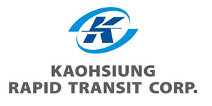
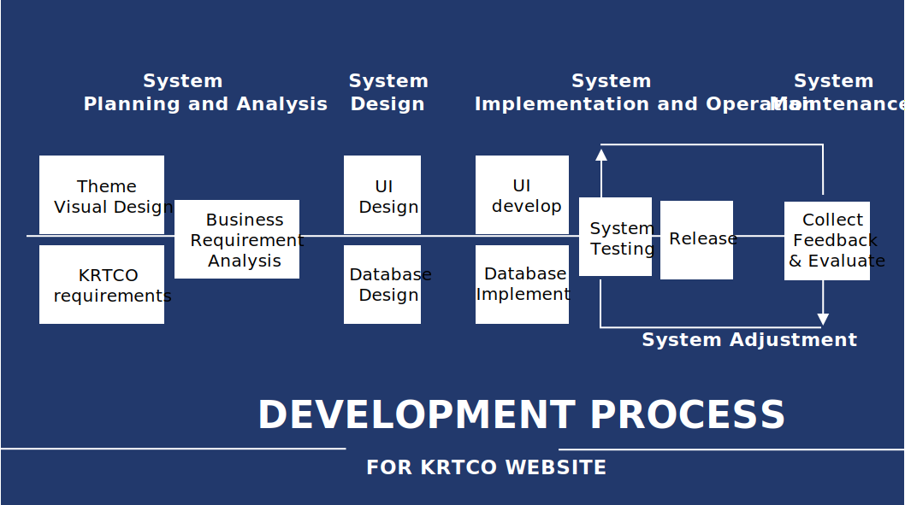
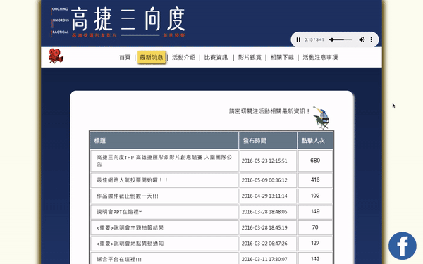
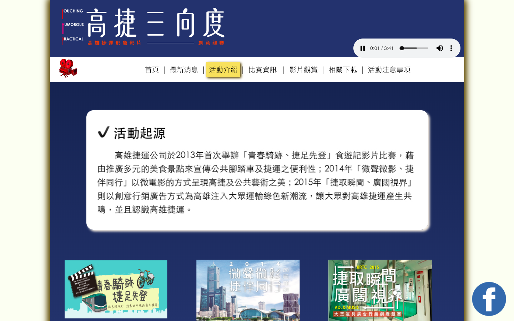

Overview
The website is developed for 2016 Coorporate Image Filming Competition of Kaoshiung Rapid Transit Coorperation for contestants to know information and register for the filming competition.
Role
frontend UI design
UI development
Tools
HTML
CSS
JavaScript
Adobe Photoshop
Background

Kaohsiung Rapid Transportation Corporation is a company that manages rapid transit system in Kaohsiung city, Taiwan. They held a competition for their corporate image video since 2013. People can team up, shoot short advertisement film and compete to win the corporate image video.
In 2016, the product manager cooperated with students from National Sun Yat-sen University — 2 students from business management department to plan for the promoting campaigns, and 4 students from information management department to build the website and voting system. For the website in 2016, the product manager wanted to improve several features compare to the previous year. I acted as the frontend designer and developer in this project.
Development Process
This project used System Analysis and Design method to develop.

1 -- System Planning and Analysis Phase
Kaoshiung Rapid Transit Cooperation hired visual designer to determined the visual elements, and the project manager have listed out the requirements in advance, then they held meeting with development teams to discussed the business requirements.
2 -- System Design Phase
In this step, I utalized the materials the company gave me and made wireframe of the web layout, and I cooporated with databse managers to discuss about the structure of frontend and backend.
3 -- System Implementation and Operation
I developed the frontend code and collaborated with the backend developers to complete the system. Later on we executed testing and then deploy the website.
4 -- System Maintenance
I collected feedbacks from the users and evaluate, then made adjustments to some of the UI.
User Interfaces
1 - Home Page
This page shows the main visual posters of this competition, 4 latest news and the official trailer of the competition. It gives user the first overview of this website.

2 - Latest News
This page listed out all the news that posted by the project team of this competition, showing the posted date and the number of people viewing each news.

3 - Introduction
This page introduces the origin, the link to past years official websites, and the full introduction of the competition in the year 2016.
4 - Competition Information
This is the main information about the competition. Includes the dates, registration information, video upload instructions, scoring rubrics, judges introduction, and prize information.
5 - Voting / Viewing Video
During the voting stage, this page provide as the voting system for people to vote for their favorite short film. After the voting, it listed out all the films that participated in this competition.
Conclusion
In this project, I cooperated with the project team and visual designer in the company, and applied the System Analysis and Design Method the development of this website. However, it lacks the real opinions and insights from the use of the users. The future work can be applying user center design approach to redesign it.
NEXT PROJECT >
NSYSU HERO